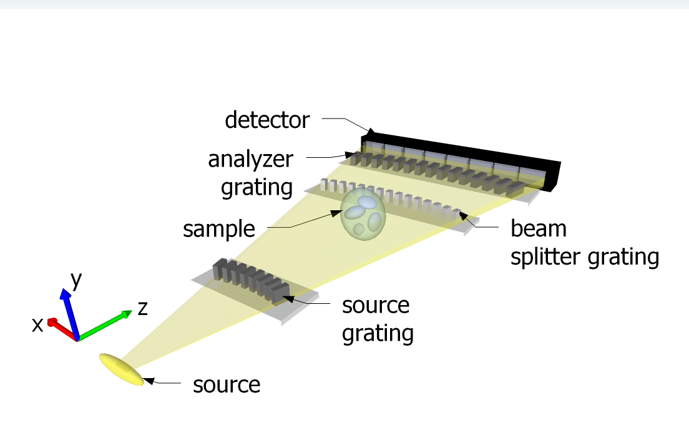
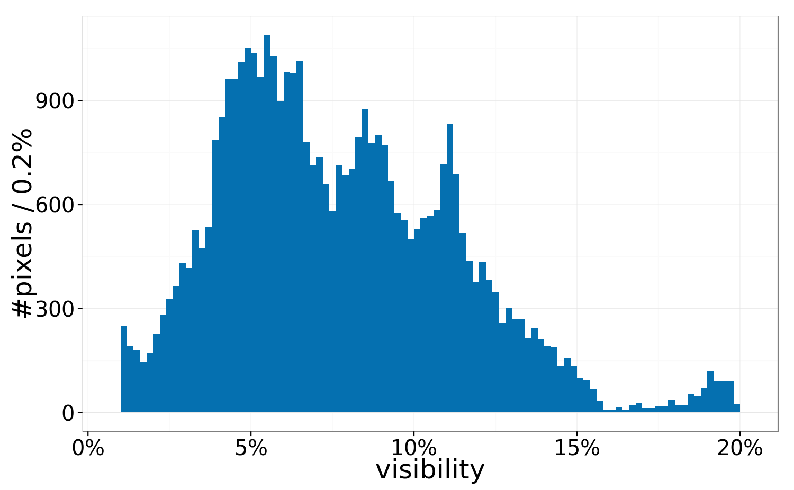
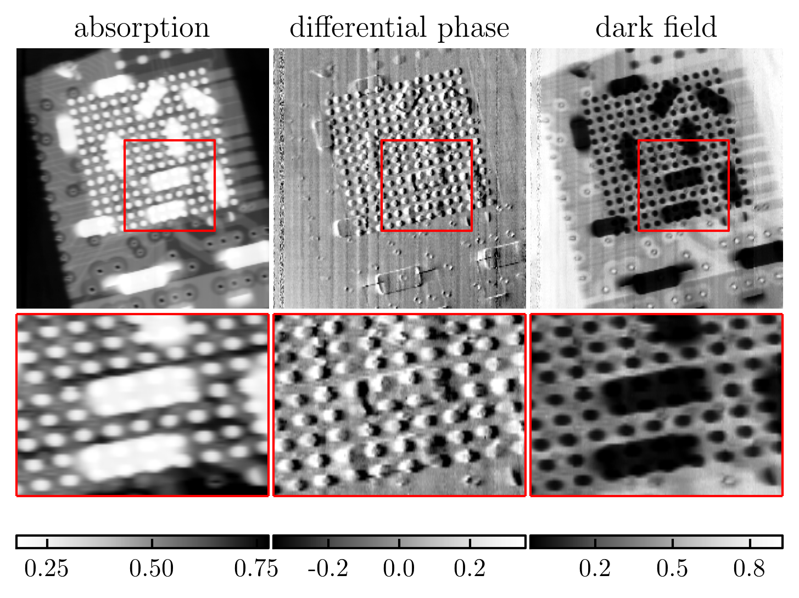

High-energy grating interferometry and Compton scattering
M. Abis, Z. Wang, M. Stampanoni
Swiss Federal Institute of Technology, Zurich, Switzerland
Paul Scherrer Institute, Villigen, Switzerland
Why high energies?
absorption \( \propto \mathcal{E}^{-3} \)
phase \( \propto \mathcal{E}^{-1} \)
The technical challenge
grating parameters for constant phase sensitivity
- period \( p \propto \mathcal{E}^{-1/2} \)
- thickness \( t \propto \mathcal{E}^{3} \)
- aspect ratio \( R = 2t/p \propto \mathcal{E}^{7/2} \)
- at 25 keV \( R \sim 30 \)
- at 100 keV \( R \gt 100 \)
The edge-on arrangement
Grating design parameters
| design energy | 100 keV | 120 keV |
| absorption depth | 800 µm | |
| period | 2.8 µm | |
| total length | 54 cm | 61 cm |
| \( G_1 \) material | gold | nickel |
Average visibility 7.5%
First images at 100 keV
X-ray phase-contrast imaging at 100 keV on a conventional source, Scientific Reports, 2014
High-energy interactions and Compton scattering
cross sections for carbon
Connections between the three signals
- absorption → extinction → scattering
- scattering → electron density → phase
Low-energy ratio of dark field and absorption
carries information about the atomic number
\[ r = \frac{\log (\text{dark field})}{\log (\text{absorption})} \]
Nat. Comm. 5/2014
High-energy ratio independent of the material
Improved visibility by 50%
average from 5% to 7.5%
Quantitative phase measurements with wedge samples
Constant differential phase value proportional to \(\delta\)
- PMMA - Polymethyl methacrylate
- PS - Polystyrene
- HDPE - High-density polyethylene
Measuring \( \delta \)
geometrical inputs + measured dpc value P:
\[ \delta = \frac{2 \pi p \tan \theta}{D}P \]
| \( p \) | period of the grating |
| \( D \) | distance \(G_1-G_2\) |
| \( \theta \) | wedge angle |
| \( P \) | measured DPC value |
Sensitivity by energy
visibility at an energy \( \mathcal{E} \) a design energy \(\mathcal{E_0}\) and a Talbot order \(m\) [ v(\mathcal{E}) = \frac{2}{\pi} \left\lvert \sin^2 Big(\frac{\pi}{2}\frac{\mathcal{E_0}}{\mathcal{E}}\Big) sin Big(\frac{m\pi}{2}\frac{\mathcal{E_0}}{\mathcal{E}}\Big) right\rvert ]
Absolute \( \delta \)
| material | NIST table \( \delta (\cdot 10^{-9}) \) | experimental \( \delta (\cdot 10^{-9}) \) |
|---|---|---|
| PMMA | \(90\) | \(92 \pm 19\) |
| PS | \(80\) | \(81 \pm 21\) |
| HDPE | \(79\) | \(87 \pm 14\) |
No fit, no calibration, absolute experimental values
Conclusions
Signal: quantitative phase
- very good agreement, even without calibration